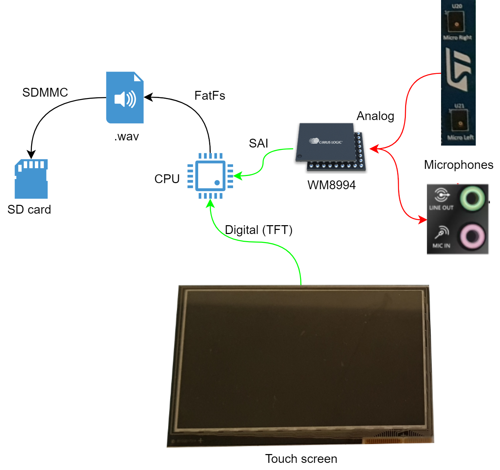

Bienvenue sur le projet d'enregistreur vocal !
Introduction
Paricipant à un TER sur de la reconnaissance vocale, la génération d'un modèle de reconnaissance vocale nécessite d'avoir un dictionnaire de mot et des enregistrements audio associés. Ce dictionnaire contient nottament des nom de cellules qui ne se trouvent pas dans les bases de données open-source. Ainsi, nous avons créé un script Matlab permettant d'enregistrer la voix de volontaires. Afin de permettre d'enregistrer un plus grand nombre de données, j'ai décidé de porter ce script sous forme d'application sur la carte STM32F746G.
Voici donc la nouvelle carte.

Ainsi que le schéma synoptique expliquant le fonctionnement du projet.

Besoins du projet
Nous avons besoin de receuillir des fichiers audio pour une liste de mot appelée dictionnaire. Pour ce faire, la carte dispose d'un Codec audio permettant de faire l'acquisition de la voix par l'interface de deux microphones sur la carte. Le but étant de pouvoir récupérer ces acquisitions pour les donner à un réseau de neuronnes conçu pour générer un modèle de reconnaissance vocale, il faut les enregistrer sur un espace de stockage amovible.
Bingo ! il y a un slot pour carte micro-SD.
Problématiques
Fichier .wav
Afin d'enregistrer des fichiers audio, il faut pouvoir les stocker sous format .wav sur la carte. Il faut pour cela, écrire une entête dans les fichiers permettant de reconnaître le type :
[Bloc de déclaration d'un fichier au format WAVE]
FileTypeBlocID (4 octets) : Constante « RIFF » (0x52,0x49,0x46,0x46)
FileSize (4 octets) : Taille du fichier moins 8 octets
FileFormatID (4 octets) : Format = « WAVE » (0x57,0x41,0x56,0x45)
[Bloc décrivant le format audio]
FormatBlocID (4 octets) : Identifiant « fmt␣ » (0x66,0x6D, 0x74,0x20)
BlocSize (4 octets) : Nombre d'octets du bloc - 16 (0x10)
AudioFormat (2 octets) : Format du stockage dans le fichier (1: PCM entier, 3: PCM flottant, 65534: WAVE_FORMAT_EXTENSIBLE)
NbrCanaux (2 octets) : Nombre de canaux (de 1 à 6, cf. ci-dessous)
Frequence (4 octets) : Fréquence d'échantillonnage (en hertz) [Valeurs standardisées : 11 025, 22 050, 44 100 et éventuellement 48 000 et 96 000]
BytePerSec (4 octets) : Nombre d'octets à lire par seconde (c.-à-d., Frequence * BytePerBloc).
BytePerBloc (2 octets) : Nombre d'octets par bloc d'échantillonnage (c.-à-d., tous canaux confondus : NbrCanaux * BitsPerSample/8).
BitsPerSample (2 octets) : Nombre de bits utilisés pour le codage de chaque échantillon (8, 16, 24)
[Bloc des données]
DataBlocID (4 octets) : Constante « data » (0x64,0x61,0x74,0x61)
DataSize (4 octets) : Nombre d'octets des données (c.-à-d. "Data[]", c.-à-d. taille_du_fichier - taille_de_l'entête (qui fait 44 octets normalement).
DATAS[] : [Octets du Sample 1 du Canal 1] [Octets du Sample 1 du Canal 2] [Octets du Sample 2 du Canal 1] [Octets du Sample 2 du Canal 2]
* Les Canaux :
1 pour mono,
2 pour stéréo
NOTES IMPORTANTES : Les octets des mots sont stockés sous la forme Petit-boutiste (c.-à-d., en "little endian")
[87654321][16..9][24..17] [8..1][16..9][24..17] [...
On remarque la nécessité de connaître la taille de l'échantillon à sauvegarder. La durée d'enregistrement de chaque mots n'excédent pas 4 secondes, soit pour une fréquence d'échantillonnage de 16 kHz, une taille de 64 Ko en mono. La taille de la RAM dont dispose la carte STM32 est de 340 Ko, il n'y aura a priori pas de problème majeur pour stocker chaque échantillon sur la carte entre deux écritures sur la carte SD. Pour des enregistrements plus conséquents, on pourra toujours utiliser la SDRAM pouvant stocker jusqu'à 64 Mo.
Problèmes rencontrés
La partie posant le plus de soucis est la carteSD ainsi que la mémoire allouée à FreeRTOS et aux tâches. Le premier soucis apparaît à une allocation supérieure à 60000 octets à freeRTOS où le formatage se passe correctement mais l'écriture d'un fichier indique un mauvais formatage. Le second apparaît à l'allocation de la mémoire aux tâches, une allocation trop importante (>4096) peut entraîner un disfonctionnement. De plus, la bibliothèque de fonctionnement de la carte SD n'est pas entièrement FreeRTOS proof. En effet, certaine fonctionnalités sont bloquées lors de la configuration du .ioc (elles ne sont pas forcément bloquées à la sélection, cependant le programme ne fonctionne plus une fois compilé).